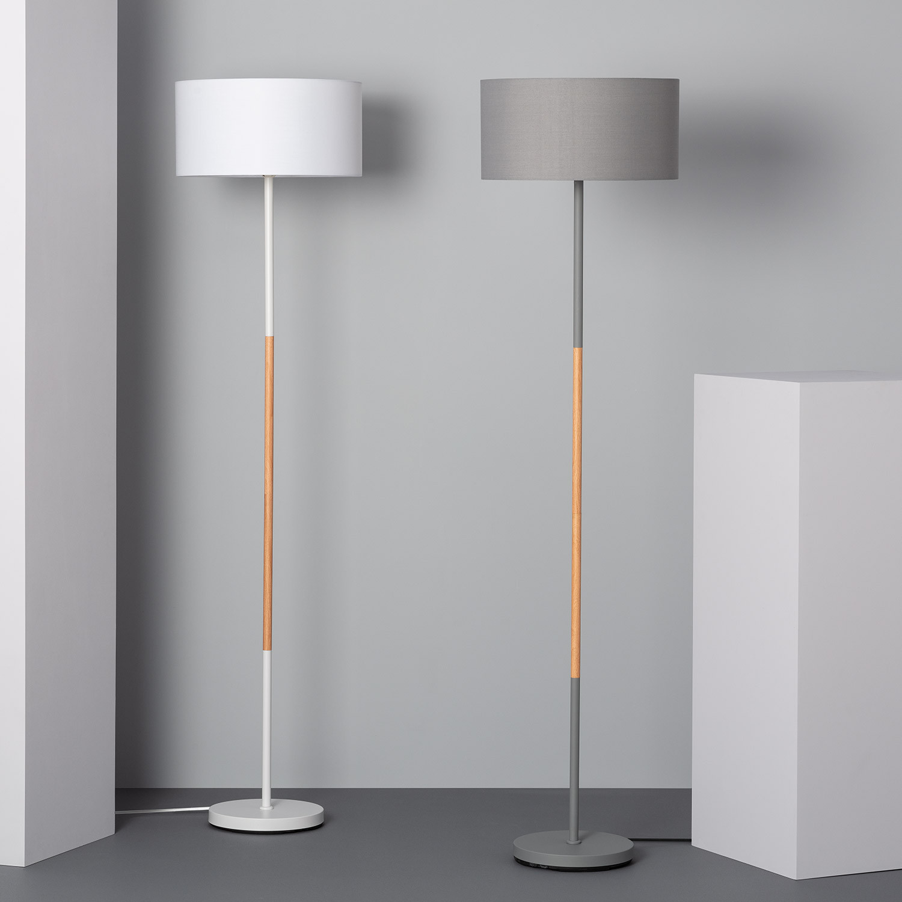

Lámparas de Pie:
Este tipo de lámparas son ideales para algunos sitios de la casa: El comedor o alguna habitación espaciosa.
Análisi de las mejores lámparas de pie calidad precio:
Lámpara de pie Newton
Esta lámpara es del leroy-merlin y cuesta aproximadamente 80 euros, es una lámpara con un estilo muy moderno y su altura es de 160 cm. Esta lámpara no contiene altura regulable.
.png)
Lámpara de pie Inspire
Esta lámpara es de leroy-merlin una tienda de muebles donde esta lámpara en concreto cuesta 40 euros, es la lámpara de pie más económica que hay en su tienda, muy simple y fácil de utilizar perfecta para leer.
.png)
Esta lámpara está hecha de acero y revestimiento en polvo con lo qual la mejor forma de limpiar la lampara es con un paño humedecido de detergente y luego secar-lo con un paño seco.
Pros y contras de las lámparas de pie:
Pros
Iluminación: Las lámparas de pie tienen la capacidad de producir una luz orientada a un lugar en concreto, gracias a esa capacidad son ideales para ponerlas en los rincones más oscuros de la casa y además son perfectas para algunas actividades como la lectura o escritura.
Altura: Muchas de las lámparas de pie que existen hoy en día su altura puede ser regulada e incluso su potencia de luz con lo cuál podemos solucionar uno de sus contras las sombras.
Contras
Potencia: Normalmente las lámparas de pie no pueden iluminar una habitación grande, ya que su potencia no es muy elevada.
Sombras: Como las lámparas de pie no iluminan desde una parte alta de la habitación si hay algún mueble lo que podrá ocurrir es que la lámpara provoque una sombra con unas dimensiones muy elevadas.
Conclusión:
Si no te gustan o no quieres una lámpara de techo en tu casa o piso este es un sustitúyete que en algunas ocasiones puede llegar a ser mejor que las lámparas de techo, nuestra recomendación es si quieres una lámpara para una habitación muy grande la compres y disfrutes.